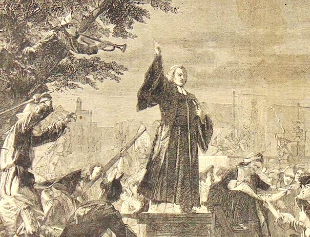

Directions: Read the full text, then answer the questions at the end.
By the early 1700s every English colony in America had an elected assembly. Landowning colonists chose representatives who voted taxes and wrote laws. Above the assembly stood a governor, appointed by the Crown or by a proprietor, and a council who advised him. On paper the governor held the stronger hand. In practice the assembly held the money. Governors depended on assemblies to vote their salaries and fund government itself, and decade by decade the assemblies used that power of the purse to claim a larger share of governing. The men who sat in them learned politics by doing it.
Britain let this happen because it was looking elsewhere. Through much of the early 1700s Britain attended to wars and politics in Europe and to party struggles at home. No minister announced such a policy, and no law granted self-government. Distance helped the habit grow. An ocean crossing took weeks, instructions arrived late, and royal officials in America often drew salaries voted by colonial assemblies. Edmund Burke, speaking in Parliament a generation later, gave the habit its lasting name, salutary neglect. By then self-government felt to colonists like the ordinary way things worked.
Colonists claimed the rights of Englishmen and tested them in print. John Peter Zenger printed the New-York Weekly Journal, which attacked Governor William Cosby. Jailed in 1734 for seditious libel, Zenger was tried in New York in August 1735. Under the law then, truth was no defense against libel. His lawyer, Andrew Hamilton of Philadelphia, admitted Zenger had printed the papers and then argued to the jury that true statements could not be libel. The jury acquitted Zenger against the judge's instruction. The verdict changed no law. The law of seditious libel stood unchanged, and another printer could still be charged under it. A colonial jury had refused to punish a printer for criticizing a governor, and the case became a landmark for press freedom in practice and in memory.
Beneath the assemblies stood the household, where most colonists were governed day to day. A household could hold a couple, their children, apprentices, servants, and enslaved people, all under one legal head. The law gave the father authority over his wife, children, servants, and enslaved people. Under coverture, a married woman's legal identity was covered by her husband's. She could not hold property, sign contracts, or sue in court. Yet women ran farms, kept shops and taverns, traded, and taught, and widows could enter a husband's trade, since widowhood restored the legal standing marriage had removed. Children worked young, and many left home as apprentices or servants. Servants worked toward freedom dues and land. Enslaved people worked inside an order that treated them as property, and inside it they built families, kept African faiths and skills, and resisted in many ways. New England families lived longer and sent children to town schools. In the Chesapeake, early deaths broke families often.
Religion ordered the week in most colonies. In New England, town taxes supported Congregational churches, and attendance was expected. In the South, the Church of England covered wide parishes one minister could barely serve. The middle colonies held the widest mix of faiths. By the 1730s many ministers worried that faith had cooled, as members attended from habit and sermons grew learned and dry. Some called for stricter discipline. Others said faith had to be felt and chosen in the heart, not simply inherited. That argument was about to become a movement.
The Great Awakening began in local revivals and swept the colonies in the 1730s and 1740s. At Northampton, Massachusetts, Jonathan Edwards watched a revival fill his town in 1734 and 1735, as longtime churchgoers felt their spiritual state as an urgent question. Edwards preached that faith was not habit or membership but a living relation to God. His sermon Sinners in the Hands of an Angry God, preached at Enfield, Connecticut, in July 1741, told listeners nothing but God's pleasure kept them out of hell, in images no hearer forgot: a spider held over a fire, waters rising behind a dam, a bow bent with its arrow aimed at the heart. Congregations wept and cried out. Congregations split over the new style. Old Lights charged the revival with disorder and false feeling. Its supporters, the New Lights, answered that a faith nobody felt was no faith at all.

George Whitefield made the Awakening a shared event. Whitefield, an English preacher whose voice carried across a field, toured from Georgia to New England in 1739 and 1740 and returned repeatedly. He preached in churches and in the open air, drawing crowds in the thousands. Newspapers printed his schedules, sermons, and journals, and Franklin, his Philadelphia printer, became his friend. Ordinary people listened to rival preachers and judged which message was true. Itinerants challenged settled ministers and survived. Baptists and Methodists multiplied, especially in the South, and Black hearers, enslaved and free, formed churches of their own. Beside the revival came the Enlightenment, which prized reason, observation, and natural law over tradition and authority and reached the colonies through books, colleges, and print. The two were rivals over where truth was found, in the heart or in reason. They were partners in training colonists to question inherited authority. By mid-century the colonies were richer, healthier, and more literate than ever, and a generation had governed itself, published its arguments, and chosen its preachers.
1. State the power the colonial assemblies held over governors, and name the mechanism that made that power effective.
2. Define salutary neglect from the reading, and name two conditions that allowed the practice to grow.
3. State what Andrew Hamilton argued in the Zenger trial, what the jury did, and why the reading calls the verdict a jury's act rather than a change in the law.
4. Define coverture, and give two ways the working reality of women's lives differed from the legal picture coverture drew.
5. Answer in a short paragraph. Name the two currents the reading places side by side in the middle of the century, state one way they were rivals, and state the shared lesson the reading says both taught colonists.
1. State the power the assemblies held over governors, and name the mechanism. The assemblies voted the colony's taxes and wrote its laws, and they voted the governor's salary and the money for roads, forts, and government itself. Because the governor depended on the assembly for his salary and for public money, the power of the purse let the assemblies claim a larger share of governing decade by decade, despite the governor's stronger position on paper.
2. Define salutary neglect, and name two conditions that allowed it. Salutary neglect is the name Edmund Burke later gave to Britain's practice through much of the early 1700s of leaving the colonies largely to govern themselves. No minister announced it and no law granted it. The conditions named in the reading are Britain's attention to wars and politics in Europe and to party struggles at home, the weeks an ocean crossing took and the lateness of instructions, and royal officials in America who drew salaries voted by colonial assemblies. Any two earn credit.
3. State Hamilton's argument, the jury's act, and why the verdict was not a change in the law. Hamilton admitted that Zenger had printed the papers attacking Governor Cosby, then argued that true statements could not be libel, although the law of the time allowed truth as no defense against seditious libel. The jury acquitted Zenger against the judge's instruction. The verdict changed no law and set no precedent another printer could claim. The law of seditious libel stood unchanged. The verdict was a single jury's refusal to convict, and its force was practical and remembered rather than legal.
4. Define coverture, and give two ways working reality differed from the legal picture. Under coverture, a married woman's legal identity was covered by her husband's, so she could not hold property in her own name, sign contracts, or sue in court. The reading's counterexamples are women running farms, keeping shops and taverns, trading, and teaching, and widows stepping into a husband's trade and property because widowhood restored a legal standing marriage had removed. Any two earn credit.
5. Name the two currents, one rivalry, and the shared lesson. The currents are the Great Awakening and the Enlightenment. They were rivals over where truth was found, the Awakening in personal faith and the awakened heart, the Enlightenment in reason, observation, and natural law. The shared lesson the reading states is that colonists learned from both to question inherited authority and judge it for themselves, in the pulpit, in print, and in the assembly. Strong answers use the reading's examples, Whitefield's crowds judging rival preachers and Franklin's inquiry, to support the pairing.